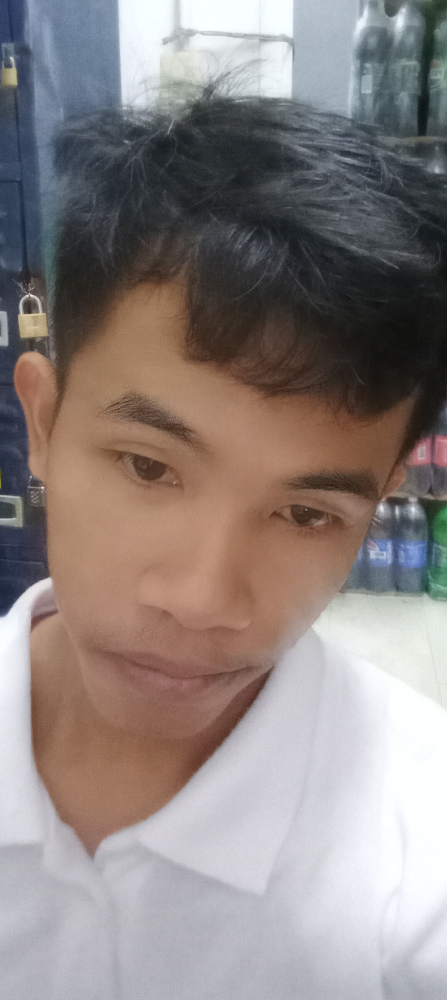

01INTERFACE
Product UI & Design Systems
Clean, scalable interface systems with strong hierarchy, responsive behavior, and thoughtful interaction details.
CREATIVE TECHNOLOGIST · DIGITAL EXPERIENCE BUILDER
I build expressive digital experiences where motion, interface, story, and technology meet.

Roberto is a creative technologist focused on making digital products feel alive. The work sits between product thinking and visual experimentation.
I care about interfaces that feel intentional — where motion, hierarchy, and technology serve the story.
From product UI systems to experimental WebGL and AI-assisted workflows, I build experiences that remain usable on a phone while still feeling expressive on a large screen.
Selected capabilities for product teams, startups, and experimental projects.
Clean, scalable interface systems with strong hierarchy, responsive behavior, and thoughtful interaction details.
Motion systems, microinteractions, and cinematic UI that feel intentional rather than decorative.
Lightweight 3D / WebGL layers used as progressive enhancement on top of solid DOM experiences.
Fast exploration of ideas using modern tooling while keeping craft and product thinking central.
A small set of high-signal projects. More case studies can be added here later.
Spatial discovery interface using WebGL surfaces, maps, and responsive booking states.
VIEW CASE ↗Motion-first dashboard studies with layered controls, glass surfaces, and ambient data.
VIEW CASE ↗Small WebGL prototypes exploring depth, shaders, particles, and tactile transitions.
VIEW CASE ↗Formal studies and continuous self-directed learning. Details can be expanded later.
Institution / program details will go here.
Self-directed studies in interface design, creative coding, and emerging tools.
For collaborations, experiments, or a serious interface that needs more personality.
hello@robertomorales.dev↗Background video: Beautiful coral reef with exotic reef fish by Mixkit. Used under the Mixkit license for non-commercial purposes with attribution.
Portrait and all other design & code by Roberto Cabalse Morales III.